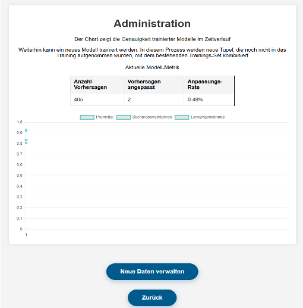

Monitoring Performance
The administration interface of the prediction system shows insights into the model's performance over time and allows administrators ro review model results in more detail.
{kind=link}
Technical Aspects
A summary table displaying three metrics from the latest prediction.
totalPredictions (Anzahl Vorhersagen): Number of predictions made.
predictionChanged (Vorhersagen angepasst): Number of predictions manually adjusted by users.
predicitionChangeRatio (Anpassungsrate): Ratio of adjusted predictions to the total, indicating user trust.
<table style="margin: 0 auto; margin-bottom: 20px; border-collapse: collapse; width: 60%;">
<thead>
<p>Metriken des aktuellen Modells</p>
<tr style="background-color: #f4f4f4;">
<th>Anzahl Vorhersagen</th>
<th>Vorhersagen angepasst</th>
<th>Anpassungs-Rate</th>
</tr>
</thead>
<tbody>
<tr>
<td>{{ predictionStats.totalPredictions }}</td>
<td>{{ predictionStats.predictionChanged }}</td>
<td>{{ predictionStats.predictionChangeRatio }}</td>
</tr>
</tbody>
</table>
Render a line chart showing accuracy trends for different target labels (Prüfmittel, Stichprobenverfahren, Lenkungsmethode).
<canvas id="accuracyChart" width="800" height="400"></canvas>
Plot accuracy over different model versions modelIDs
accuracyData contains separate accuracy series for each target variable
const accuracyChart = new Chart(ctx, {
type: 'line',
data: {
labels: {{ modelIDs|tojson }},
datasets: [{
label: 'Prüfmittel',
data: {{ accuracyData[0]|tojson }},
borderColor: 'rgba(75, 192, 192, 1)',
//backgroundColor: 'rgba(75, 192, 192, 0.2)',
borderWidth: 2,
fill: true
},
{
label: 'Stichprobenverfahren',
data: {{ accuracyData[1]|tojson }},
borderColor: 'rgba(75, 192, 192, 1)',
//backgroundColor: 'rgba(75, 192, 192, 0.2)',
borderWidth: 2,
fill: true
},
{
label: 'Lenkungsmethode',
data: {{ accuracyData[2]|tojson }},
borderColor: 'rgba(75, 192, 192, 1)',
//backgroundColor: 'rgba(75, 192, 192, 0.2)',
borderWidth: 2,
fill: true
}]
Loads the Chart.js library from a CDN for plotting the line chart.
<script src="https://cdn.jsdelivr.net/npm/chart.js"></script>
Button to manage stored predictions
Button to return to landing page
<button class="submit-button" onclick="window.location.href='/stasheddata'">Neue Daten verwalten</button>
<button class="submit-button" onclick="window.location.href='/index'">Zurück</button>
Notes
HTML and logic done by Johannes and Serdar